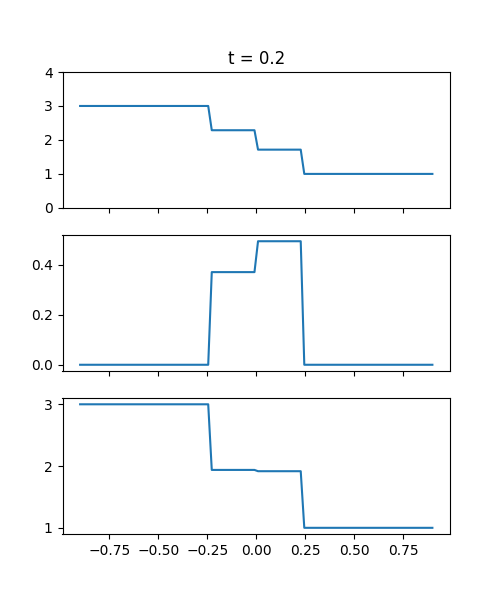
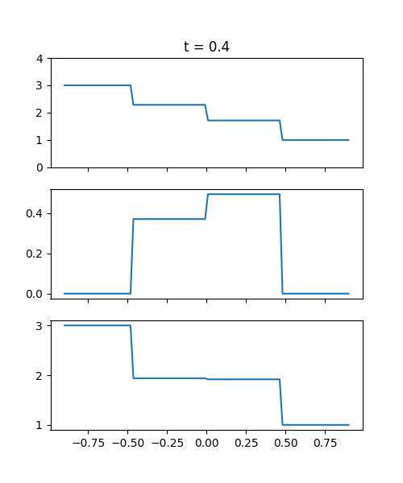
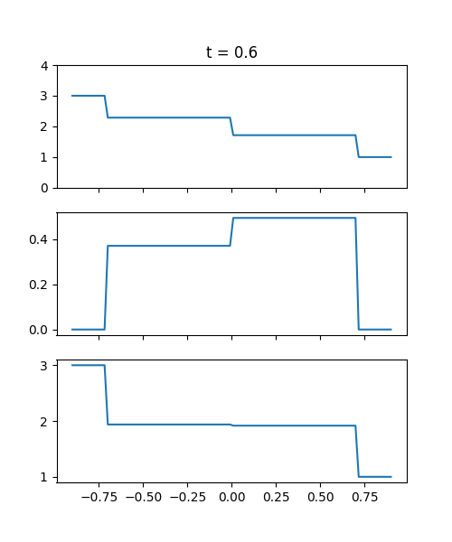

Sonlu Hacim (Finite Volume) Yöntemi - 3
Euler Gaz Denkleminin Çözümü
[2]'de gösterilen tek boyutta Euler gaz dinamiği formülünü yazalım,
$$ \left[\begin{array}{c} \rho \\ \rho u \\ E \end{array}\right]_t + \left[\begin{array}{c} \rho u \\ \rho u^2 + p \\ (E+p) u \end{array}\right]_x = 0 $$
Üstteki formülü matris notasyonu ile tekrar yazarsak [3, sf. 88],
$$ U_t + F(U)_x = 0 $$
ki $U,F$ birer vektor olacaklar,
$$ U = \left[\begin{array}{c} \rho \\ \rho u \\ E \end{array}\right], \qquad F(U) = \left[\begin{array}{c} \rho u \\ \rho u^2 + p \\ (E+p) u \end{array}\right] $$
Şimdi aynen yatay iletim (lineer advection) ve Burgers'ın denklemlerini hatırlarsak onları su formde gösterebiliyorduk,
$$ u_t + f'(u) u_x = 0 $$
ki yatay iletim için $f(u) = au$ ve Burgers için $f(u) = \frac{1}{2} u^2$, bu fonksiyonların türevleri sırasıyla $f'(u) = a$ ve $f'(u) = u u_x$, sonuç olarak
$$ u_t + a u_x = 0 $$
ve
$$ u_t + u u_x = 0 $$
denklemleri elde ediliyordu. Matris formu için de benzer mantık geçerli, eğer $F$ türevine Zincirleme Kuralı uygulanırsa,
$$ \frac{\partial F(U)}{\partial x} = \frac{\partial F}{\partial U} \frac{\partial U}{\partial x} $$
ki $\partial F / \partial U$ türevi bir Jacobian matrisi ortaya çıkartır. Bu Jacobian'ı alabilmek için önce $u_1,..,u_n$ değişkenlerini $U$ seviyesinde tanımlayalım, ayrıca $F$ öğeleri de $f_1,..,f_n$ olarak etiketlemek iyi olacak, o zaman
$$ U = \left[\begin{array}{c} u_1 \\ u_2 \\ u_3 \end{array}\right] = \left[\begin{array}{c} \rho \\ \rho u \\ E \end{array}\right], \qquad F(U) = \left[\begin{array}{c} f_1 \\ f_2 \\ f_3 \end{array}\right] = \left[\begin{array}{c} \rho u \\ \rho u^2 + p \\ (E+p) u \end{array}\right] $$
Ve Jacobian bu durumda,
$$ \partial F / \partial U = \left[\begin{array}{ccc} \partial f_1 / \partial u_1 & \dots & \partial f_1 / \partial u_m \\ \partial f_2 / \partial u_1 & \dots & \partial f_2 / \partial u_m \\ \vdots & \vdots & \vdots \\ \partial f_m / \partial u_1 & \dots & \partial f_m / \partial u_m \end{array}\right] $$
Üstteki türevleri alabilmek için $f_1,f_2,f_3$ akış formüllerini $u_1,u_2,u_3$ bazlı temsil etmek gerekiyor. $U$ vektörüne bakıyoruz, $u_1 = \rho$, $u_2 = \rho u$, $u_3 = E$. Buna bakarak $f_1$ kolay, $u_2$ ile aynı, $f_1 = u_2 = \rho u$.
$f_2,f_3$ içinde $p$ terimi var o sebeple onların karşılığını bulmak için $p$'yi $u_1,u_2,u_3$ üzerinden göstermek lazım. Daha önce [2]'de görmüştük ki
$$ E = \rho (\frac{1}{2} u^2 + e) $$
ve
$$ e = \frac{p}{(\gamma - 1)\rho} \implies p = (\gamma - 1) \rho e $$
$p$ için bize $\rho e$ lazım. Ona erişmeye uğraşalım. Türetim sırasında $\rho u^2$ ortaya çıkabileceğini görüyoruz, onu $u_1$ ve $u_2$ elde etmek kolay, $u_2^2 / u_1 = \rho u^2$. Şimdi $E$ formülünü açarsak (ve onun $u_3$ olduğunu hatırlayalım),
$$ E = u_3 = \frac{1}{2} \rho u^2 + \rho e $$
Üstteki $\rho u^2$ değerini yerine koyalım,
$$ u_3 = \frac{1}{2} \frac{u_2^2}{u_1} + \rho e $$
$$ \rho e = u_3 - \frac{1}{2} \frac{u_2^2}{u_1} $$
$\rho e$ elde edildi. $p$ içinde yerine koyarsak,
$$ p = (\gamma - 1) \left( u_3 - \frac{1}{2} \frac{u_2^2}{u_1} \right) $$
O zaman
$$ f_2 = \frac{u_2^2}{u_1} + (\gamma - 1) \left( u_3 - \frac{1}{2} \frac{u_2^2}{u_1} \right) $$
oluyor. $f_2$'yi basitleştirirsek,
$$ = \frac{u_2^2}{u_1} + (\gamma - 1)u_3 - \frac{(\gamma-1)}{2} \frac{u_2^2}{u_1} $$
$$ = \frac{u_2^2}{u_1} \left( 1 - \frac{\gamma-1}{2} \right) + (\gamma - 1)u_3 $$
$$ f_2 = \frac{1}{2} (3-\gamma) \frac{u_2^2}{u_1} + (\gamma - 1)u_3 $$
Devam edelim, $f_3$ türetelim. $E,p$ biliniyor, ama bir $u$ lazım, $u_2 = \rho u$ demiştik, $u = u_2 / \rho$ diyebiliriz, $u_1 = \rho$ olduğuna göre, $u = u_2 / u_1$.
$$ f_3 = \left( u_3 + (\gamma - 1) ( u_3 - \frac{1}{2} \frac{u_2^2}{u_1}) \right) \frac{u_2}{u_1} $$
$$ = \frac{u_3 u_2}{u_1} + (\gamma - 1) \left( \frac{u_3 u_2}{u_1} - \frac{u_2^2}{2u_1^2} \right) $$
$$ = \cancel{\frac{u_3 u_2}{u_1}} + \frac{\gamma u_3 u_2}{u_1} - \frac{\gamma u_2^3}{2u_1^2} - \cancel{\frac{u_3 u_2}{u_1}} + \frac{u_2^3}{2 u_1^2} $$
$$ = \frac{\gamma u_3 u_2}{u_1} - \frac{1}{2} (\gamma - 1) \frac{u_2^3}{u_1^2} $$
Böylece $F(U)$ sonucunu bulmuş oluyoruz,
$$ F(U) = \left[\begin{array}{c} f_1 \\ f_2 \\ f_3 \end{array}\right] = \left[\begin{array}{c} u_2 \\ \frac{1}{2} (3-\gamma) \frac{u_2^2}{u_1} + (\gamma - 1)u_3 \\ \gamma \frac{u_2}{u_1} u_3 - \frac{1}{2} (\gamma - 1)\frac{u_2^3}{u_1^2} \end{array}\right] $$
Üstteki $F(U)$ matrisine bakarak onun Jacobian matrisini artık ortaya çıkartabiliriz,
$$ \partial F / \partial U = \left[\begin{array}{ccc} 0 & 1 & 0 \\ -\frac{1}{2} (\gamma - 3)(\frac{u_2}{u_1})^2 & (3-\gamma)(\frac{u_2}{u_1}) & \gamma-1 \\ - \frac{\gamma u_2 u_3}{u_1^2} + (\gamma-1)(\frac{u_2}{u_1})^3 & \frac{\gamma u_3}{u_1} - \frac{3}{2} (\gamma-1)(\frac{u_2}{u_1})^2 & \gamma (\frac{u_2}{u_1}) \end{array}\right] $$
Tekrar ana değişkenler $u,E$ bazında temsil etmek iyi olur, pek çok yerde $u_2/u_1$ ifadesi var, bu gayet basit $\rho u / \rho = u$ demektir. Bir $\frac{u_2 u_3}{u_1^2}$ görüyoruz, onu açarsak $\rho u E / \rho^2 = \rho E / \rho$, ve $u_3 / u_1$ ise $E / \rho$ olur, o zaman,
$$ \partial F / \partial U = \left[\begin{array}{ccc} 0 & 1 & 0 \\ -\frac{1}{2} (\gamma - 3)u^2 & (3-\gamma)u & \gamma-1 \\ - \frac{\gamma u E}{\rho} + (\gamma-1)u^3 & \frac{\gamma E}{\rho} - \frac{3 (\gamma-1)u^2}{2} & \gamma u \end{array}\right] $$
sonucuna erişiriz [4, sf. 52].
Riemann Roe yöntemi
from collections import namedtuple
import matplotlib.pyplot as plt
import numpy as np
primitive_variables = ('Density', 'Velocity', 'Pressure')
Primitive_State = namedtuple('State', primitive_variables)
def primitive_to_conservative(rho, u, p, gamma=1.4):
mom = rho*u
E = p/(gamma-1.) + 0.5*rho*u**2
return rho, mom, E
def conservative_to_primitive(rho, mom, E, gamma=1.4):
u = mom/np.maximum(1.e-15,rho)
p = (gamma-1.)*(E - 0.5*rho*u**2)
return rho, u, p
def roe_averages(q_l, q_r, gamma=1.4):
rho_sqrt_l = np.sqrt(q_l[0])
rho_sqrt_r = np.sqrt(q_r[0])
p_l = (gamma-1.)*(q_l[2]-0.5*(q_l[1]**2)/q_l[0])
p_r = (gamma-1.)*(q_r[2]-0.5*(q_r[1]**2)/q_r[0])
denom = rho_sqrt_l + rho_sqrt_r
u_hat = (q_l[1]/rho_sqrt_l + q_r[1]/rho_sqrt_r)/denom
H_hat = ((q_l[2]+p_l)/rho_sqrt_l + (q_r[2]+p_r)/rho_sqrt_r)/denom
c_hat = np.sqrt((gamma-1)*(H_hat-0.5*u_hat**2))
return u_hat, c_hat, H_hat
def Euler_roe(q_l, q_r, t, gamma=1.4):
rho_l = q_l[0]
rhou_l = q_l[1]
u_l = rhou_l/rho_l
rho_r = q_r[0]
rhou_r = q_r[1]
u_r = rhou_r/rho_r
u_hat, c_hat, H_hat = roe_averages(q_l, q_r, gamma)
dq = q_r - q_l
s1 = u_hat - c_hat
s2 = u_hat
s3 = u_hat + c_hat
alpha2 = (gamma-1.)/c_hat**2 *((H_hat-u_hat**2)*dq[0]+u_hat*dq[1]-dq[2])
alpha3 = (dq[1] + (c_hat - u_hat)*dq[0] - c_hat*alpha2) / (2.*c_hat)
alpha1 = dq[0] - alpha2 - alpha3
r1 = np.array([1., u_hat-c_hat, H_hat - u_hat*c_hat])
r2 = np.array([1., u_hat, 0.5*u_hat**2])
q_l_star = q_l + alpha1*r1
q_r_star = q_l_star + alpha2*r2
states = np.column_stack([q_l,q_l_star,q_r_star,q_r])
speeds = [s1, s2, s3]
wave_types = ['contact','contact', 'contact']
xmax = 1.0
x = np.linspace(-xmax, xmax, 100)
xi = x/(t+1e-10)
rho = (xi<s1)*states[0,0] + (s1<=xi)*(xi<s2)*states[0,1] + \
(s2<=xi)*(xi<s3)*states[0,2] + (s3<=xi)*states[0,3]
mom = (xi<s1)*states[1,0] + (s1<=xi)*(xi<s2)*states[1,1] + \
(s2<=xi)*(xi<s3)*states[1,2] + (s3<=xi)*states[1,3]
E = (xi<s1)*states[2,0] + (s1<=xi)*(xi<s2)*states[2,1] + \
(s2<=xi)*(xi<s3)*states[2,2] + (s3<=xi)*states[2,3]
q = conservative_to_primitive(rho, mom, E, gamma=1.4)
fig, axes = plt.subplots(3, 1, figsize=(5, 6), sharex=True)
axes[0].plot(x,q[0]); axes[0].set_ylim(0,4)
axes[1].plot(x,q[1]); axes[0].set_ylim(0,1)
axes[2].plot(x,q[2]); axes[0].set_ylim(0,4)
axes[0].set_title('t = ' + str(t))
plt.savefig('euler-roe-%d.png' % (t*100))
left = Primitive_State(Density = 3.,
Velocity = 0.,
Pressure = 3.)
right = Primitive_State(Density = 1.,
Velocity = 0.,
Pressure = 1.)
q_l = np.array(primitive_to_conservative(*left))
q_r = np.array(primitive_to_conservative(*right))
Euler_roe(q_l, q_r, t=0.2)
Euler_roe(q_l, q_r, t=0.4)
Euler_roe(q_l, q_r, t=0.6)
Euler_roe(q_l, q_r, t=0.8)
 


[devam edecek]
Kaynaklar
[1] Leveque, Riemann Problems and Jupyter Solutions
[2] Bayramlı, Fizik, Gazlar, Sıvılar - 2
[3] Toro, Riemann Solvers and Numerical Methods for Fluid Dynamics
[4] Hesthaven, Numerical Methods for Conservation Laws
Yukarı